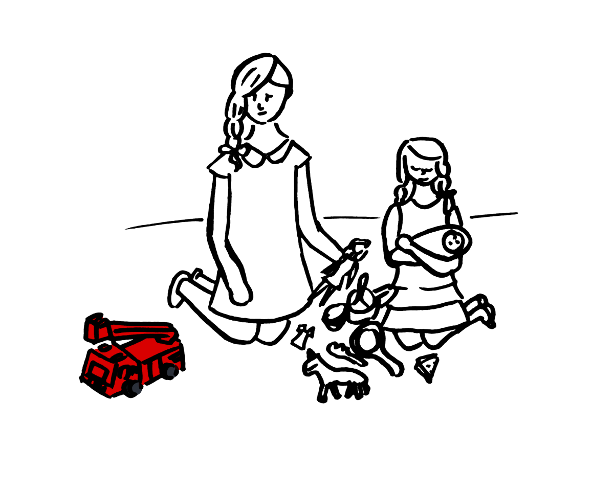

The Core of the Sun
Johanna Sinisalo
From the author of the Finlandia Award-winning novel Troll: A Love Story, The Core of the Sun further cements Johanna Sinisalo’s reputation as a master of literary speculative fiction and of her country’s unique take on it, dubbed “Finnish weird.”
Get the book
